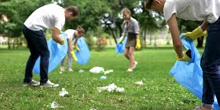

Dividir un Grupo de alumnos en Grupos mas pequeños, cada grupo se encarga de los botes de basura de la zona que se les asigno.
Los alumnos deben dirigirse a su area asignada.
Los alumnos sacan las bolsas de basura de los botes y la llevan a la parte de atras de la cancha, donde siempre depositamos las bolsas.
Separar las tapas de las botellas de plastico y estas mismas en bolsas separadas, asi como toda la otra basura o PET.
Tomar evindencias(fotos o video) de toda la actividad.
